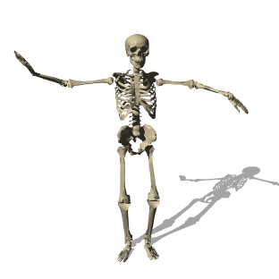

La salud ósea requiere atención y cuidado permanente. A continuación, se presentan algunos signos de alerta y medidas preventivas que pueden ser de gran utilidad para los docentes de Educación Física.
Dolor persistente
La presencia de dolor persistente en huesos o articulaciones puede ser un indicador de posibles problemas. Es esencial prestar atención a cualquier molestia que no desaparezca con el reposo y consultar a un profesional de la salud.
Debilidad o fatiga excesiva
La fatiga constante o la sensación de debilidad pueden ser señales de desgaste óseo. Incorporar ejercicios de fortalecimiento muscular y resistencia puede ayudar a contrarrestar estos síntomas.
Postura y equilibrio
Problemas de postura o dificultades en el equilibrio pueden indicar debilidad en el sistema óseo. La actividad física supervisada puede ser beneficiosa para mejorar la estabilidad y reducir el riesgo de caídas.
Historial familiar y factores de riesgo
Conocer el historial familiar de enfermedades óseas y otros factores de riesgo como la falta de actividad física o una dieta deficiente en calcio y vitamina D puede ayudar en la prevención de la salud ósea.
Nutrición equilibrada
Una dieta rica en calcio y vitamina D es esencial para la salud ósea. Los profesores pueden proporcionar orientación sobre la importancia de una alimentación equilibrada y cómo los nutrientes impactan positivamente en la densidad y fortaleza ósea.
Exámenes médicos regulares
La realización de exámenes médicos regulares es importante para evaluar la salud ósea y abordar cualquier problema de manera temprana.
Adaptaciones en la práctica deportiva
En casos de lesiones es esencial adaptar la práctica deportiva. Los profesores de Educación Física pueden proporcionar pautas sobre ejercicios modificados o alternativas para preservar la salud ósea.
